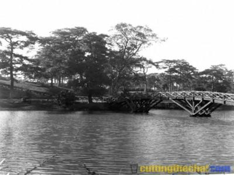
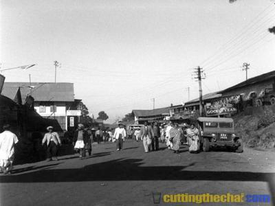

Scotland Of The East
How Shillong earned the name of being the Scotland of the East?
It is said that the rolling hills around the town reminded the European settlers of Scotland. Hence, they would also refer to it as the "Scotland of the East"


History
How It All Started
1303 In and around the Surma and the Kushiara, a patchwork of territories had emerged when Shah Jalal conquered local rajas and established Islam in Sylhet, creating a new Muslim cultural boundary.
1346 When the traveller Ibn Batuta met Shah Jalal, the Sylhet landscape held diverse territories of Khasis, Garos, Hindus, Muslims and others.
1627 The first recorded contact of the Assamese with the Catholic missionaries, when the Tibet-bound Jesuit missionaries, Stephen Cacella and John Cabral visited Goalpara and Kamrup districts on their way to Tibet.
1707 In 1707, the Khasis and the Jaintias jointly thwarted Ahom King Rudra Singh's invasion of Jaintiapur.
1757 When the East India Company took Bengal from the Nawabs, the old northeastern frontiers of Mugal Bengal posed may problems. Khasis held most land north of the Surma and ruled mountains above. Jaintia Khasi rajas held mountains and lowlands north and east of Sylhet town.
1765 The East India Company acquires the district of Sylhet, as a result of the grant of the Diwani of Bengal (along with Bihar and Orissa) and the first contact is made between the British and the inhabitants of the Khasi Hills. The Khasis were located north of Sylhet district, and the Jaintias were to the north-east. At that time about half of the Khasi and Jaintia Hills district, including the country around the capital, Shillong, was outside the limits of British India, consisting of a collection of small states in political relations, regulated by treaty with the Government of India, which enjoyed almost complete autonomy in the management of their local affairs.
The inhabitants of K&ign;J Hills first became known to the civilised world, when the East India Company established its stations in Bengal. At that time the Khasis not only inhabited the Hills, but also some portions of the Plains of Assam proper to the north, and Sylhet to the south. The town of Sylhet and the villages of Pandua and Chhatak were once in their possession. It was probably about this time that the Khasis obtained possession of those tracts of land in the Plains which they still continue to cultivate.
At this time the Khasis used to come to pandua an the border of Sylhet to trade in silk, cotton goods, iron, wax, honey and ivory in exchange for rice, salt and dried fish[2]. Limestone from the Khasi Hills used to fulfill the demand in Bengal then. Soon British officials of the East India Company began trading in limestone and thus came in contact with the Khasis.
1774 A punitive expedition was conducted into the Jaintia Hills under the command of Major Henniker. It is probable that aggressions against the inhabitants of the Plains had rendered punishment necessary.
1778 The officials of the East India Company were aware of the export business of limestone which was done from the Khasi Hills in the year 1778.
1783 Khasi mountain warriors seized Pandua and the passes around. Sporadic warfare continued for 7 years between East India Company armies and Khasi rajas around Pandua.
The Khasis attacked Pandua to avenge an insult offered to one of them by the Havildar of Robert Lindsay. The servant of Lindsay was killed and his lime kilns were destroyed. The prisoners taken were killed and scalped.
1784 Massive floods disrupted life drastically in the plains and mountains and famines ensued. This made the jungles between Pandua and Sunamganj more attractive to lowland farmers and investors.
1786 David Scott was born on the 14 May 1786 (August according to memoir) in the North-East part of Scotland.
1788 Conflict began in lowland forest villages north of Sunamganj, during flood induced famines.
1789 Early that year, two lowland Bengali Khasi warrior rajas, Ganga Singh and Aboo Singh, captured numerous villages and controlled several river routes. In the summer rebel Khasis and Bengali Khasis controlled 137 Bengali villages, Ganga Singh escaped to the hills, and Aboo Singh attached the Pandua fort, killing its commander.
Marquis of Cornwallis, issued Orders for the definition of the boundary line and the collector was directed to inform the Khasis that they would not be permitted to come down armed, within the line of the Company’s frontier.
1813 Charter Renewal: free trade and admission of missionaries. On 7 April, the first convert of Serampore Mission, Krishna Chandra Pal, proceed to Pandua (a trading post at the foot of the Khasi Hills immediately below Cherrapunjee) from Sylhet. Pandua was an important market and a meeting place of Khasis and Bengalis. Though it lies in the Plains, it still belonged to the Khasi kingdom of Cherrapunjee (Sohra). Entry to the Khasi Hills was primarily from the Sylhet plains through the Dwars – trading gateways – alongside rivers exiting into the plains from the hills and one travelled to Calcutta through East Bengal. A short while later, 7 people were baptised (including 2 Khasis) by Krishna by the banks of the Dlebolisshore river, in the presence of 8 native chiefs and 600 Khasis. On Pal’s return to Serampore, William Carey felt encouraged to begin translation of the Bible into Khasi language using Bengali script. Pal never returned to the Khasis.
The favourable reports given by Krishna and others respecting the Khasis, moved Dr. William Carey to provide a translation of the New Testament in their language. The work was commenced in 1813, and an edition of 500 copies, printed in Bengali characters, was published in 1824.
An effort was made early in 1815 to revive the work of Krishna Pal, and a Portuguese brother, John De Silva was sent to Sylhet, together with a young Brahmin convert, Bhagvat, a native of Serampore. De Silva was chiefly employed instructing a number of destitute Portuguese who resided at Sylhet.
1815-30 Activity of Ram Mohan Roy and the Serampore missionaries.
1816 One of the English gentleman at Sylhet responded to William Carey expressing regret that he could then give no information “respecting the wild and savage race on the mountains, for at present it is very dangerous to go to these Hills. Two of these mountain Khasis were hanged at Sylhet a few days since, and another is condemned to remain in gaol for life, for murdering the Company’s subjects.”
1816 The Baptist Missionary Society of England had established the Serampore Mission which operated independently from the year 1816.
1817 An incident occurred over the lease of limestone quarries by the Syiem of Langrin to Inglis and Company, at an area called Lour (between Bogles Churrah on the west and Punatit on the east) for a term of 10 years.
1818 The Serampore mission work in Sylhet was abandoned.
1821 The tea plant was first discovered growing in the wild in Upper Assam.
An attempt was made by a part of raiders from Jaintia to carry off a number of British subjects from Sylhet, to be offered as human sacrifices. The matter was brought to the notice of the Government, and the Rajah warned that any similar attempt would be punished with the forfeiture of his territory.
A dispute occurred when the Syiem of Nongstoin questioned the authority of the Syiem of Langrin over the quarries and in the process came into conflict with Inglis and Company. In September, the Khasi traders raided the area and carried off 7 of the Company’s men. The Nongstoin Syiem afterwards granted the lease to a French businessman.
1822 In November, David Scott (known as Iskat Sahep to the Khasis) was appointed Agent to the Governor General for North East Frontier.
In 1822, David Scott was made Civil Commissioner of the North-East parts of Rangpur.
1824 After the Burmese invasion of Assam, the British began their campaign against the Burmese. The outbreak of the first Burma War brought the British into closer relations with the Raja of Jaintia, and in April of that year Mr. David Scott, the Governor-General's Agent on the frontier, marched through his territory from Sylhet to Assam, emerging at Raha on the Kalang river, in what is now the Nowgong district. This was the first occasion on which Europeans had entered the hill territory of the Khasi tribes. After the First Burmese War, the Ava kingdom ceded the provinces of Manipur, Tenassarim, and Arakan to the British. Lower Assam (originally Koch Hajo) was formally annexed.
On 10 March, 1824 two years before the Treaty of Yandaboo was signed, a treaty was concluded between David Scott, Agent to the Governor General on the part of the East India Company and "Ram Singh of Jaintia". By this Treaty, Ram Singh acknowledged allegiance to the Company and placed his country under the protection of the English.
After the Treaty was signed, David Scott marched through the Jaintia territory with an escort of three Companies of the 23rd Regiment Native Infantry under Captain Horsburge. This was the second occasion on which Europeans had entered the hill territory of the Khasi tribes.
Ever since this year, the relation between the English and the Khasi states was regulated by treaties, engagements and negotiations.
44th Bengal Native Infantry (Goorkha Light Infantry – late 44th Sylhet Light Infantry. Raised 19 February 1824) – Linked with 42nd and 43th Regiments[8]. Head Quarters at Manipore, Depot at Shillong. Uniform, Dark Green, Facings, Black.
Dr. William Carey was moved to provide a translation of the New Testament in their language. The work was commenced in 1813, and an edition of 500 copies, printed in Bengali characters, was published in 1824.
1825 An agreement was entered into with the Raja of Jaintia, Ram Sing, by which he promised to aid the British forces, should the Burmese attempt to enter the Assam valley by way of his territory. None of the conditions of the treaty were fulfilled. The British defeated the Burmese in upper Assam leading to the Treaty of Yandaboo.
1826 Early in the year, at the conclusion of the Burmese war, a treaty was made by which Assam proper, was ceded to the British. Assam was included as a part of the Bengal Presidency. The Khasi Hills now, therefore, lay between two British possessions – the Assam valley in the north, and the Plains of Sylhet in the south. After the expulsion of the Burmese from Assam and the occupation of that province by the Company, Mr. David Scott (the Governor General’s Agent and Commissioner of Assam since 1826) entered the Khasi Hills (with Major White to Nongkhlaw on 1 November 1826) in order to negotiate for the construction of a road through the territory of the Khasi Siem or Chief of Nongkhlaw (U Teerut Singh), which aimed to link Sylhet with Gauhati.
On 3 November 1826, an Agreement was signed between David Scott, Agent to the Governor General, and Tirot Singh, Syiem of Nongkhlaw. By this Agreement, Nongkhlaw voluntarily agreed to become subject to the Company and under the protection of the English. Secondly, the Syiem agreed to give a free passage for troops through his country to go and come between Assam and Sylhet. Thirdly, the Syiem agreed to furnish materials for the construction of a road through his territories, receiving payment for the sum and after its completion to adopt such measures as might be necessary to help it in repair. This was the third occasion on which Europeans had entered the hill territory of the Khasi tribes.
1828 At Cherrapunji Mr. Scott built for himself a house on the plateau, which was acquired from the Siem by exchange for land in the plains, as the site of a sanitarium. In March lower Assam was formally annexed. In the same year, the Kachari kingdom was annexed under the Doctrine of Lapse after the king Govinda Chandra was killed.
1829 The peace was suddenly broken by an attack made, on 4 April by the people of Nongkhlaw on the survey party engaged in laying out the road, resulting in the massacre of two British officers and between fifty and sixty natives. This led to a general confederacy of most or the neighbouring chiefs to resist the British.
3 September 1829: Agreement between the Hon’ble Company and Mishnee, Beer Sing, Shoomer, and Wookushun, Ohdadars of Chela Poonjee and Mayabar Poonjee.
3 September 1829: Deed of installment with Mishnee, Beer Sing, Shoomer, and Wookushun, Ohdadars of Chela Poonjee and Mayabar Poonjee.
Agreeable to the terms and conditions, a plot of land was selected, which according to David Scott, was the most convenient for the purpose. A written agreement to this effect was therefore executed between David Scott and Dewan Singh, Syiem of Sohra on 12 September 1829.
In the heat of the war, a treaty was concluded between Dewan Singh, Syiem of Sohra and David Scott, on behalf of the East India Company on the 12 September 1829 by which Dewan Singh surrendered Saitsohpen in exchange of Pandua. It became a base of military operations for the British.
10 September 1829: Deed of agreement between the Hon’ble Company and Dewan Singh Raja and Karbareea and others, Khasias of Cherra Poonjee.
1 October 1829: Agreement between David Scott, Esq, Agent to the Governor-General, and Ooram, Oeang, Oefan, Obase, and Chunder Roy, inhabitants of Mokoondo Poonjee.
12 October 1829: Recognizance between David Scott, Esq, Agent to the Governor-General, and Woolar Singh, Raja of Murreah.
17 October 1829: Agreement with Zubber Singh, Raja of Ramrye.
Towards the close of 1829, a young Scotsman, James Rae, who had served for some years in the Company’s Artillery, was sent (by the Serampore Mission?) to Gowhati. From this station it was expected that he would be able to reach the Khasis and neighbouring tribes.
Brahmo Samaj founded.
1829 In 1829, Jones(?) recommended Pandua at the foot of Khasi Hills as an excellent site for an iron industry for the manufacture of bar, bolt and hoop iron.
1829-30 Talk of transfer of certain lands in the plains of Sylhet (near Pandua/Mouzah Burryaile) to the Syiem of Sohra in exchange for the lands at Sohra ceded by him to the government for the purpose of a sanitorium. On 12 September, a treaty was concluded between Dewan Singh, the Syiem of Sohra and David Scott, on behalf of the East India Company, by which Dewan Singh surrendered Saitsohpen in exchange for Pandua. It became the base of military operations for the British.
1830 Potatoes were first introduced into the country by Mr. David Scott, the Governor General’s Agent.
Bor Manick of Shyllong was trapped, imprisoned though later released and forced to sign a treaty with the English. The English managed to bring a split among the “Bakhraws” of Shyllong State which finally bifurcated the Shyllong State into Khyrim and Mylliem.
15 January 1830: Agreement between David Scott, Esq, Agent to the Governer-General, and Burro Manika, Raja of Khyrim.
In a letter from David Scott to Ram Singh (13 April 1830) the English considered it improper for Ram Singh to establish a chokey at Chapper Mookh to levy a toll on passing boats because the southern side of the river formed the boundary of Sutnga, the northern side of the river, the boundary of the British.
On 19 October 1830, another written Agreement was executed between T.C. Robertson, Agent to the Governor General and Sobha Singh, Syiem of Sohra by which the Syiem of Sohra promised to give more lands to the English.
19 October 1830: Deed of Agreement between the Hon’ble East India Company and Shoova Singh Raja and Beshaye Sirdar and others, Khasias, residents of Cherra Poonjee.
In his first report, James Rae stated that he had under his charge 12 interesting youths, including 3 Khasis – committed to his care by Mr. David Scot.
James Rae resigned later that year.
A detachment of troops arrived at Cherrapunjee Station early in October 1830.
1831 Four British subjects residing in the Plains were seized by Chattar Sing, the Rajah of Goba, one of the petty chieftains of Jaintia. The four were carried to the temple at Goba and sacrificed to Kali.
Rambrai heavily assaulted the 3 Doars in the plains and this attack has been taken to be “the most serious that had taken place since the catastrophe at Nongkhlaw in 1829”. Rambrai was then invaded by British troops, a heavy fine was imposed and an agreement was forced to be signed.
At the beginning of the 19th century robbery and murder were common on the northern frontier, but the Khasis were soon pacified after the annexation of the Assam Valley, and the last outbreak took place in 1831.
David Scott, Agent to the Governor General of the North-Eastern Frontier of Bengal and Commissioner of Revenue and Circuit in the district of Assam, North-Eastern part of Rungpur, Sherpur and Sylhet, died on 20 August, aged 45 years and 3 months[9].
Ensign Brodie was brought in, ill of a fever, on 20 April 1831, and died on the 23 April 1831 in Nongkhlao.
1832 18 year old Anglo-Indian Alexander Lish was sent by William Carey of the Serampore Mission to commence missionary operations in Cherrapunjee (soon after the Government recently established a Sanatorium).
Two British subjects were passing along the high road in Assam when they were suddenly seized, carried up into the hills in the neighbourhood of Goba, and after having been decked with new clothes and jewels, they were led to be sacrificed, together with two other persons, also subjects of this government. One of the individuals first named succeeded in making his escape and on his return to the plains he gave information of what had occurred, and, as his statement was corroborated by many collateral circumstances, there is no reason whatever to doubt the truth of what he said. The crime was perpetrated; it is to be feared as, regards the other three individuals, as they have never since heard of...
The information about the existence of large deposits of coal at Cherrapunjee came to light in the year of 1832.
21 November 1832: Recognizance between the Agent to the Governor-General, and Wookushun Raja and Wooanluka Raja, residents of Mullai Poonjee, having appeared before Mr. H. Inglis on the banks of the river Jadukata.
11 December 1832: Agreement between the Agent to the Governor-General, and Okar, inhabitant and Raja of Bhaul Poonjee, having presented himself before Captain Townshend at Cherra Poonjee.
In 1832 Captain Jenkins was deputed by Lord William Bentinck, the Governor-General, to report upon the resources of Assam, and the tea plant was specially brought to his notice by Mr. Bruce.
1833 Teerut Singh, having received assurance that his life would be spared, surrendered on 13 January and was imprisoned for life in Dacca. The meeting was held at Nursingaree, about one mile east of Umshillong (the place was most probably Rangkyndur, a spot very near to the Umshillong stream just below Shillong Peak). A long and harassing war came to a close. Cherrapunji then became the headquarters of the Sylhet Light Infantry, whose Commandant was placed in political charge of the district, including the former dominions in the hills of the Raja of Jaintia.
9 February 1833: Kabuliat between The Hon’ble East India Company and Wookwing Longdoo, inhabitant of Nongklang, appertaining to Rambrai.
Towards the end of 1833, Lish visited Calcutta and was ordained. A service was held on Boxing Day, the interest was enhanced by the fact that several Khasis, who had come down with Mr. Lish to see the wonders of the great city, were present on this occasion, when the first missionary was set apart to preach the Gospel to their tribe.
The monopoly of the East India Company of the tea trade with China had ceased[10]. No advantage was taken of the discovery until after the monopoly of the East India Company of the tea trade with China had ceased in 1833.
1834 Mr. Lish returned to the Hills in January, taking with him a native preacher, Jan, to work principally among the Bengali in the neighbourhood. Mr. Joshua Rowe accompanied him to establish an English Boarding School at Cherrapoonjee.
Three schools were established by Mr. Lish – one at Cherrapoonjee, Mawsmai and Mawmluh. Mr. Lish commented that “the only religion understood by them consisted in endeavouring to appease the demons with sacrifices of goats, fowls, sheep and pigs.”
28 March 1834: Chand Manika, entered into an agreement on behalf of Burro Manik, Raja of Mooleem Poonjee, to the effect that a fine of Rs. 5,000 imposed upon his maternal uncle, Burro Manick, not having been paid up to that day, he would now be the Raja of Mooleem Poonjee, agree to pay Rs. 1,000 out of the above sum to Captain Townshend at Cherra Poonjee within ten days and that with the remaining Rs. 4,000 he would construct a durable road from Mooleem Poonjee to Cherra Poonjee, leading to Myrung, fit for the easy passage of horses, those places which, are bad and unfit for the road being repaired and levelled by the Company's people. If the Company approves of the road, a receipt for Rs. 4,000 will be granted.
29 March 1834: The Hon'ble Company, through Francis Jenkins, Esq., Agent to the Governor-General, had appointed, Runjun Singh, inhabitant of Nuckna, as Raja of the territories of the former Raja Tirut Singh.
In 1834 Lord WilIiam Bentinck recorded a minute, stating that his attention had been called to the subject previous to his having left England, and he appointed a committee to prosecute inquiries, and to promote the cultivation tea.
1835 21 January 1835: Agreement between the Agent to the Governor-General and Oan Sirdar, resident of Sajur Poonjee, Okenglung, resident of Nung Kunja Poonjee. Oman Sirdar, resident of Soondhuree, and Oenoya Sirdar, resident of Omasem, having attended before Captain Lister, the Commanding Officer.
22 January 1835: Recognizance between the Agent to the Governor-General, and Oan Sirdar, resident of Sajur Poonjee, Okenglung, resident of Nung Kunja Poonjee; Oman Sirdar, resident of Soondhuree, and Oman Sirdar, resident of Omaghun, appertaining to Ramrye.
On 11 February, The Governor General in Council appointed Captain Lister as the Political Agent. The station at Sohra being the only place at that time, over which the Agent exercised sole jurisdiction. However, he was in charge of relations with the Jaintia Raja.
On 15 March, after two years of fruitless negotiations, Captain Lister, commanding the Sylhet Light Infantry Battalion, in the company of Mr. H. Inglis (his son-in-law), then having the local rank in the same corps, proceeded to Jaintiapur[11]. The Raja of Jaintia voluntarily relinquished his dominion on the confiscation of his territory in the plains. It was alleged that the Raja failed to stop human sacrifices. British gained control of the Jaintia Hills.
At this time, Captain R. B. Pamberton wrote about the Khasis and Jaintias “they descended into the plains both of Assam and Sylhet, and ravaged with fire and sword the villages which stretched along the base of this lofty region. Night was the time almost invariably chosen for these murderous assaults, when neither sex nor age were spared”.
In 1836, the Head Quarters of the 8th Gurkha Rifles (1st Battalion) / Regiment were moved to Cherrapoonjee where they remained till 1867[12].
43rd Bengal Native Infantry (Goorkha Light Infantry – late 43rd Assam Light Infantry. Raised 13 April 1835) – Linked with 42nd and 44th Regiments[13]. With Burmah Expeditionary Force, Depot at Shillong. Uniform, Dark Green, Facings, Black.
Tirot Sing died on 17 July.
In 1835 the first tea garden was opened at Lakhimpur.
English the Court language.
1836 Teerut Singh dies in jail in Dacca.
1836 Tea is successfully manufactured in Upper Assam which leads to a tea industry.
1837 Of the natives during his 1837 visit, botanist William Griffith had ‘little to say’: “They are a stout-built, squat, big-legged hill tribe: the women in regard to shape being exactly like their mates; and as these are decidedly ugly—somewhat tartarish-looking people, very dirty, and chew pawn to profusion—they can scarcely be said to form a worthy portion of the gentler sex”.
1838 Upper Assam was formally annexed into the British empire. This is attributed to the successful manufacture of tea.
In 1838 the first twelve chests of tea from Assam were received in England.
The work in the Khasi Hills, started by Alexander Lish, is abandoned. Alexander Lish stayed in Cherrapunjee for 6 years learning the language, opening a number of schools and retranslating the New Testament again using Bengali script.
William Carey had significant links in Liverpool in Wales. The treasurer of Serampore group Samuel Hope and the Secretary of the Welsh Mission Rev. John ‘Minimus’ Roberts lived very close by at Liverpool, perhaps provoking the interest of the Welsh Mission in Khasi Hills.
1839 With the annexation of the Maran/Matak territory in the east, the annexation of Assam was complete. In the same year the Assam Company was founded.
9 February 1839: Kabuliat between the Hon’ble Company and Oan Sirdar, resident of Sajur Poonjee, Ramrye.
9 February 1839: Kabuliat with Ooma Sirdar, inhabitant of Khuidas Beel Poonjee, Ramrye.
13 February 1839: Agreement between the Political Agent to the Governor-General, and Songaph Raja, resident of Mohuram hills.
With the fall of Nongkhlaw and with the annexation of the Jayantia Parganas in 1835, the British, thought that all encounters must have been quelled, but the scene of the struggle could still be seen. Sngap Singh of Maram continued the struggle for four years more, till he was forced to surrender in 1839.
Mercantile associations for the planting and manufacture of tea in Assam began to be formed in 1839.
As prospects were limited and there were better facilities for raising large amounts of capital in London, Bengal Tea Association of Calcutta was persuaded to amalgamate with the Assam Company of London in 1839.
1840 Thomas Jones and his wife arrive at Cherrapunjee heading the Welsh Calvinistic Methodist Mission. This saw the beginning of a remarkable interaction with the Khasis. They set about the work of educating the Khasis and translating the scriptures.
Mr. And Mrs. Thomas Jones leave Liverpool on 25 November on the ship “Jamaica”.
The Sirdars of Byrung Poonjee also signed another perpetual lease of Agreement to the coal fields of Byrung Poonjee on 20 April 1840 which was later confirmed by Sobha Singh, Syiem of Sohra.
20 April 1840: Perpetual lease agreement between the Political Agent at Cherra Poonjee and Raja Shoova Singh, of Cherra Poonjee.
Coal was worked on for the first time in 1840 by Captain Lister, the Political Agent of the East India Company.
1841 Mr. And Mrs. (Anne) Thomas Jones arrive in Calcutta on 23 April (almost 5 months from the date of departure).
After staying a few weeks in Calcutta, on 22 June they arrive in Cherrapunjee. They traveled down the Hoogly river, the Sunderbans, up the river networks to Surma river and fresh water jheels (inland water bodies) to the foothills below Cherrapunjee. Then they had to climb up the mountains on foot or had to be carried in ‘Khoh Kit Briew’ – a Khasi special purpose basket fpr carrying people – up 4,500 feet.
1842 Mr. Jones prepares a “First Khasi Reader” and a translation of the “Mother’s Gift”. These two books are printed in Calcutta, and were the beginning of Khasi literature.
The first Mission school was built in Mawsmai, a small village, 2 miles from Cherrapunjee.
ascertain the prospects of opening school in their midst.
On 16 July, the Reverand and Mrs. William Lewis sailed from Liverpool.
1843 The Chinese staff that was imported earlier for the cultivation of tea left Assam. Tea plantations came to be tended by local labor solely, mainly by those belonging to the Bodo-Kachari ethnic groups.
Mr. And Mrs. Thomas Jones are joined by 3 new workers, the Reverand and Mrs. William Lewis (2 January in Cherrapunjee) and Dr. Owen Richards and his 6 year old son, Owen Charles.
The Mission houses at this time stood in the military station, about two miles from Cherra village. For the convenience of work, permission was sought from the Rajah to build new premises on Nongsawlia Hill, lying mid-way between the military station and the Cherra village; and here two new Mission houses and a schoolroom were erected.
Abolition of slavery.
1844 In March, Dr. Richards was recalled and his connection with the Mission dissolved. The Rev. Dr Owen Richards was recalled after allegations of improprieties with Lucy Marsh, the niece of local resident Lieutenant William Lewin.
1845 On 12 August, Mrs. Jones gave birth to a son. Ten days later she passed away from weakness and fever
.The “Cordellia” with Reverend and Mrs. Daniel Jones on board, sets sail from Liverpool on 13 September.
1846 Reverend and Mrs. Daniel Jones arrive in Calcutta on 24 January.
Thomas Jones was in Calcutta at the time, and the three reach Cherrapunjee on 23 February.
On Sunday, 8 March, the first baptism takes place under the Mission.
On 5 November, a party comprising Mr. And Mrs. Jones, Thomas Jones, Lieutenant Lewin, and 2/3 friends set out for the interior in search of a suitable site for a school – the village of Jowai is chosen. They return on 13 November.
On 2 December, Daniel Jones dies of ‘jungle fever’, contracted while passing through marshy districts on the homeward journey. He was 33 years old.
An hour later, Mrs. Daniel Jones delivers a premature baby girl. She returns to Liverpool on the “Cordelia”.
Two days later, Lieutenant Lewin died of the same fever as had proved fatal to Mr. Daniel Jones.
In I846 Government made over its experimental establishment to the Assam Tea Company.
1847 Thomas Jones’ connection with the mission terminated. Thomas Jones himself was expelled by the mission board in 1847 followed his remarriage to a fifteen-year-old Englishwoman, a liaison made much against the wishes of his co-religionists[14].
1848 On Sunday, 16 July Ka Nabon was the first Khasi female to be baptised.
On 30 September, Reverend William Pryse and his wife sail from Liverpool.
1905 Partition of Bengal. On 1 October 1905, Dacca becomes the new capital of Eastern Bengal and Assam, and Shillong declines in importance[18]. It is still the summer capital/residence of the government and the headquarters of the district. Peasants from East Bengal began settling down in the riverine tracts (char) of the Brahmaputra valley encouraged by the colonial government to increase agricultural production. Set in 9 acres of forest, Tripura Castle is built in Shillong by Maharaja Bir Bikram Manikya Deb Burman of Tripura[19]. The pony cart service remained up to 1905. The village Heneng Umkhrah was brought into the municipality of Shillong Station in 1905. The Laban Dispensary, the first of its kind, was opened in 1905. 1906 Bengal was partitioned and East Bengal was added to the Assam Chief Commissioner's Province. The new region, now ruled by a Lt. Governor, had its capital at Dhaka. The first automobile transport - the first fleet of motor cars, branded Albion was inaugurated in 1906 by Golam Hyder & Sons. 1907 A motor service was introduced in the year 1907. 1909 The Roman Catholics establish Loreto Convent in Shillong on 8 May 1909. 1910 The Shillong Municipal boundary was extended in 1910 to include Laitumkhrah, Hopkinson Estate, Malki, Mawprem and the areas between Laban and Laitkor forests. On 15 November 1910, the station of Shilong was upgraded to a Municipal Board under the Bengal Act III of 1884 covering the area bounded by Laitumkhrah, Malki, Laban, Mawkhar and Umkhra river. 1910-16 Lord Hardingue II. 1911 The unpopular Partition of Bengal was finally annulled by an imperial decree, announced by the King-Emperor at the Delhi Durbar. The Tonga or Pony Cart service and the Bullock Cart service ended in 1911. In 1911, the Albion motor service contract was taken over by the Planters Stores (of tea garden). On 2 January 1911, the Government of India conferred on Amjad Ali the honorary title of Khan Sahib, the first in Shillong. 1912 With the annulment of the partition of Bengal, the administrative unit was reverted to a Chief Commissioner's Province (Assam plus Sylhet). Shillong becomes the capital once again (after a gap of 7 years from 1905) on 7 April 1912. 1912-18 Sir Charles Earle, Chief Commissioner of Assam. 1912-20 The tenure of the Assam Legislative Council was from 1912 to 1920, when it was a Chief Commissioner's province for the second time. 1913 The Roman Catholics establish St. Mary’s School in Shillong. The Roman Catholics built the Church of the Divine Saviour, a wooden structure. The Khasi Hills Welsh Mission Hospital at Shillong was founded by Dr Hugh Gordon Roberts who qualified as a doctor (having worked as a chartered accountant previously) in Liverpool in 1912. In 1913, when the Government wanted to enforce the Bengal Municipal Act 1884 in Shillong within the boundary of the State of Mylliem, the Government had to issue Notification and to this effect, through the operation of the Indian (Foreign Jurisdiction) Order in Council 1902. Tagore is awarded the Nobel Prize for Literature. 1915 The Christian Brothers were invited to Shillong and St.Edmund’s College was begun the following year. On 4 November, the foundation stone of the King Edward VII Memorial Pasteur Institute and Medical Research Institute, Shillong was laid. The buildings were completed in 1916. In recognition of the pioneering contributions by Golam Hyder Mollah and Kasimuddin Mollah (father and son)to the building up of economic infra-structure in Shillong, Kasimuddin Mollah was conferred the title of Khan Bahadur by the Governor General of India, Lord Hardinge on 3 June 1915. 1916-21 Lord Chelmsford. 1918 The Opera Hall is established in 1918 in Thana Road. 1918-21 Sir Nicholas Bell, Chief Commissioner of Assam. 1919 Tagore visits Shillong for the first time and stayed at Brookside Compound, a house in the Rilbong area[20]. Montagu Chelmsford Report, the Government of India Act was passed. The Report made a specific recommendation that the typically backward tracts should be excluded from the scope of the Reformed Council. 1920 Shillong Urban Constituency was the only consituency of the Hill areas in the Assam Legislative Council. The experiment of nominating a hillman to the council was tried and a Garo by the name of Jangin Sangma Lasker was nominated but failed. 1921 Assam became a Governor's province in 1921. Rev. J.J.M.Nichols Roy was elected as an independent candidate from the Shillong Constituency defeating Sivnath Dutta. On 12 February, the first meeting of the Assam Legislative Council was held in the Council Chamber of the Government House, Shillong. There were no parties, and the ministers were chosen by the Governor to represent communities and localities. Chamber of Princes was accepted and inaugurated on 8 February 1921. The first meeting of the Legislative Council was in the Council Chamber of the, Government House, Shillong on 12 February 1921. The Dyarchy of the Assam Legislative Council from 1921 to 1937. The Albion motor service contract was taken over now by the Commercial Carrying Company in 1921 which continued till independence. 1922 Welsh Mission Hospital, Shillong, was opened in 1922 (founded in 1913). 1921-26 Lord Reading. 1923 The Roman Catholics establish Don Bosco School in Shillong. Tagore visits Shillong for a second time and stayed for over a month at Jeet Bhumi, a little away from Brookside Compound. It was during this visit that he penned his famous drama Yakshapuri (later published as Raktakarabi) and poen Shillong-er-chithi. Amjad Ali was the first citizen of Shillong to be honoured with the title of Khan Bahadur on 9 April 1923. 1924 From this year, the Hill areas were represented by a Welsh Missionary. 1926 In the second General Election, Rev. Nichols Roy was again elected by an overwhelming majority over Sibnath Dutta and Kongor Macdonald Basaiawmoit. 1926-31 Lord Irwin. 1927 Tagore visited Shillong for the third and last time and was lodged at Upland Road, Laitumkhrah. 1927-28 Around 1927-28 Rilbong and Kench's Trace areas, earlier ear maked, as reserve area for Military purposes were allotted to civilian Government servants for construction of residences. 1928 Rev. Nichols Roy won the third general election in October for a member of the Assam Legislative Council from the Shillong Urban Constituency, defeating Macdonald Khongor and Rai Bahadur Nagendranath Choudhury, a Zamindar from Shillong. A fourth general election was held soon after in November and remained in power for 6 years. Nichols Roy was dropped from the Ministry in favour of Abdul Hamid from the Surma Valley. Sir Syed Muhammad Saadulla was knighted in 1928. 1929 Orders were issued by Government for holding a general election in May 1929 of a member for the Assam Legislative Council from the Shillong Urban Constituency. Nomination papers were filed by Nichols Roy, Macdonald Kongor and Rai Bahadur Nagendra Nath Choudhury (a zamindar from Sylhet). The election was held on the 3 October 1929 and was keenly contested by the three gentlemen. Nichols Roy secured the majority of votes and was declared elected on 4 October 1929. The Fourth General Election held in November 1929 remained in power for a long term of six years. In 1929, there were eleven Municipal wards in Shillong, three in the so called British area and eight in the Non- British Syiemship area. 1931 In 1931, Laban Ward of Shillong Municipality was split into Laban and Lumparing-cum-Madan Laban. 1931-36 Lord Willingdon. 1933 On 3 October, Lord Wellington visited Shillong. In 1933, Kench's Trace was excluded from the Shillong Municipality. 1934 The Khasi states had formed a federation with the objective of acting as an intermediary body between the states and the Government of India[21].
1935 Under the operation of the Govt. of India Act,1935, the areas of North Eastern India were classified into 4 areas – Excluded Areas, Partially Excluded Areas, the Frontier Areas and the Khasi States which were 25 in number and in Subsidiary Alliance with the British. In 1935, when the Government of India Act was passed, Notifications were issued in the name of the "Crown Representative" but only through the operation of the Indian (Foreign Jurisdiction) Order in Council 1937. Such Notification was issued to include Kench' Trace and Rilbong within the "Shillong (Administered Areas) Municipality. 1936 The earlier 1913 building of the Roman Catholic Church of the Divine Saviour was a wooden structure. It was destroyed in the Good Friday fire of April 10, 1936. In 1936, the names of the "Constituencies" of the Assam Province are given as follows:1. Shillong Constituency which includes 'British Areas' of the Shillong Sub-Division. This Constituency also includes "Mylliem State Portion."
2. Jowai Constituency which includes Jowai Sub-Division, Block I and Block Il which are now under 'Mikir Hills' were part of Jowai Sub-division.
3. Women's (Shillong) Constituency which includes women voters and women candidates. The Women's (Shillong) Constituency mentioned in Part III of the said Schedule is a Constituency specially formed…"
1936-43 Lord Linlithgow.
1937 Burma became a separate, self-governing colony.
The Dyarchy of the Assam Legislative Council from 1921 to 1937. Implementation of Provincial Autonomy under the Government of India Act 1937.
Kench’ Trace and Rilbong were included in the Shillong Minicipality.
Rev. Nichols Roy was again elected defeating Ajra Singh Khongphai and Kongor Macdonald.
The first meeting of the Legislative Assembly was on 7 April at the legislative Assembly Chamber, Shillong.
The office of the Premiere was recognised in Assam. The first Sadullah Ministry came into existence on 1 April and consisted of two members each from Assam and Surma Valley and one from the hill areas (Rev. Nichols Roy).
1938 On 5 February, the second Sadullah Ministry was formed and was soon voted out of office.
On 19 September the first Bordoloi Ministry was formed.
1939 On 17 November the Bordoloi Ministry resigned and the third Sadullah Ministry was formed.
1940 On 25 December, the third Sadullah Ministry was voted out, bringing the province under Governor’s rule.
1941 In 1941 the Welsh Mission transferred the direction of all its work to the Presbyterian Church in North East India.
In 1933, Kench's Trace was excluded from the Shillong Municipality and in 1941 was again included.
1942 On 25 September, the fourth Sadullah Ministry was formed.
1943-47 Lord Wavell.
1945 The fourth Sadullah Ministry resigned on 23 March but again came into power on 24 March.
The Khasi Hills Welsh Mission Hospital at Shillong was founded by Dr Hugh Gordon Roberts. He retired in 1945.
1946 The general election which should have been held in 1942 could not be conducted because of the Second World War and could only be held in 1946. On 11 September the second Bordoloi Ministry was sworn in. Nichols Roy held the Shillong Seat defeating Ajra Singh Khonghpai and Kongor Macdonald.
The Consituent Assembly which first met on 9 December was responsible for framing the Constitution of India.
On the eve of Indian independence in 1947, tribal leaders began a campaign for the separation of the hill tracts from Hindu-dominated Assam and for the creation of a new tribal state in the region[22].
1947 Following a referendum, almost all of erstwhile Sylhet became a part of East Pakistan, barring the Karimganj subdivision which was incorporated into the new Indian state of Assam.
The Khasi states had formed a federation with the objective of acting as an intermediary body between the states and the Government of India. After India’s attainment of Independence the chiefs of the states agreed to their accession to the Indian Union.
On November 15 the new Roman Catholic Cathedral Church in Shillong was completed.
The Albion motor service contract was taken over now by the Commercial Carrying Company in 1921 continued till independence.
The Bivar Estate at Lachaumiere acquired by the Nawab of Dacca, Salimullah early in the last century but was taken over by the Government in 1947.
1949 The Khasi Hills Welsh Mission Hospital at Shillong was founded by Dr Hugh Gordon Roberts. He retired in 1945 but was asked to go back in 1949 to set up a smaller hospital in Jowai, Assam, which he did.
1950 In 1950, Sir Syed Muhammad Saadulla, as a leader of the community in Assam, joined the Indian National Congress.
1950s Conflict and violence between the Hindu Assamese and the tribal peoples increased during the 1950s. Leaders of the tribes formed the Assam Hill Tribal Union to press for separation from Assam.
1952 The District Council of the United Khasi-Jaintia Hills was formed and this superceded the authority of the hereditary chiefs. The Council consisted of 24 members elected on the basis of adult franchise.
In the hill areas of Assam, the district and the regional councils were constituted in 1952 and 1953, respectively.
First election to the Assam Legislative Assembly in 1952 in free India.
1955 Sir Syed Muhammad Saadulla passed away in 1955.
1960 Following the introduction of Assamese as the official language, the tribal leaders formed a coalition of nationalists and cultural groups, the All Party Hill Leaders Conference (APHLC), and demanded the self government and unification of the non-Indian regions of South Western Assam.
1963 In late that year thousands of tribal kinsmen, fleeing Pakistani troops, crossed the Indian border and were allowed to stay. The Indian government, aware of the propaganda possibilities, announced that the mostly Christian tribesmen preferred secular India to Muslim Pakistan.
1969 Hoping that autonomy would preempt the increasing calls for armed rebellion in the region, the Indian government issued a decree that created within Assam an autonomous state called Meghalaya.
In 1941 the Welsh Mission had transferred the direction of all its work to the Presbyterian Church in North East India. The last Welsh missionary left in 1969.
1970 Shillong remained the Capital of Assam till 1970. In that year Meghalaya was created as a State within a State and the city became a twin Capital.
1971 Sylhet became part of the newly formed independent country of Bangladesh.
In the month of March and beginning of April there was an influx of refugees from East Pakistan into Meghalaya.
The Government of Meghalaya passed the Transfer of Land Regulation Act, 1971 which brought settled non-tribals at par with other floating non-tribals.
1972 Shillong remained the capital of undivided Assam until the creation of the new state of Meghalaya on January 21 when Shillong became the capital of Meghalaya and Assam moved its capital to Dispur. The North East Frontier Agency’s (NEFA) headquarters were in Shillong until that region became the union territory of Arunachal Pradesh also in 1972.
The refugees started leaving for Bangladesh by January 1972.
1974 The new state government in Meghalaya demanded greater autonomous power and also restrictions on immigration of lowland peoples.
On 26 January 1974, Assam Government was shifted to Dispur and Shillong became the sole Capital of Meghalaya.
Gallery
-

-
-

-

-
-
-
-

-
-
-
-
-
-


{kind=link}
{kind=link}
{kind=link}
Thank you
Thank you For visiting this project. Its still being improved as i currently working on this projects as well as other hope to make it much better when its visited again.
Contact
- Sunnypaul393@gmail.com
- +918974909577